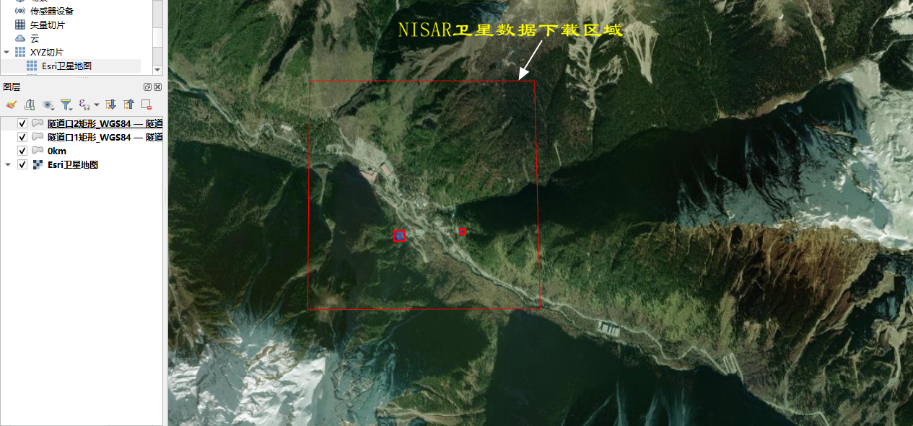
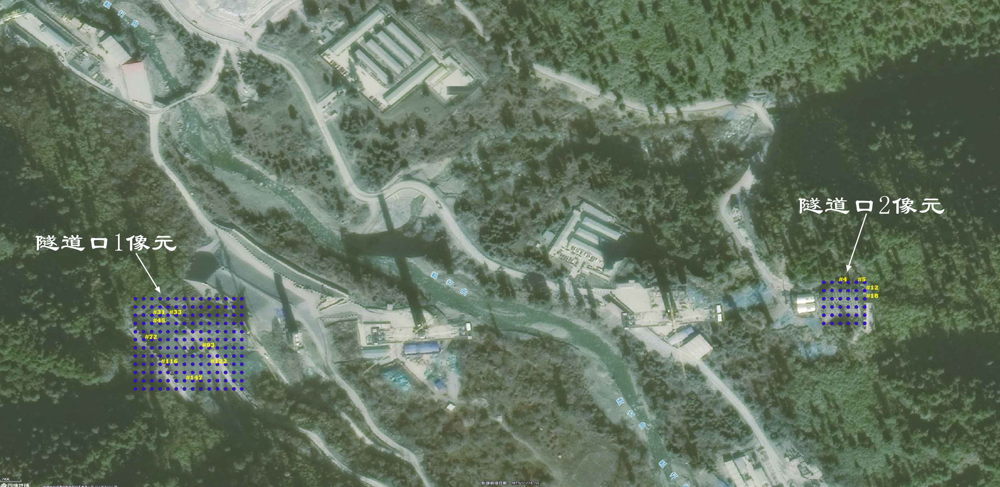
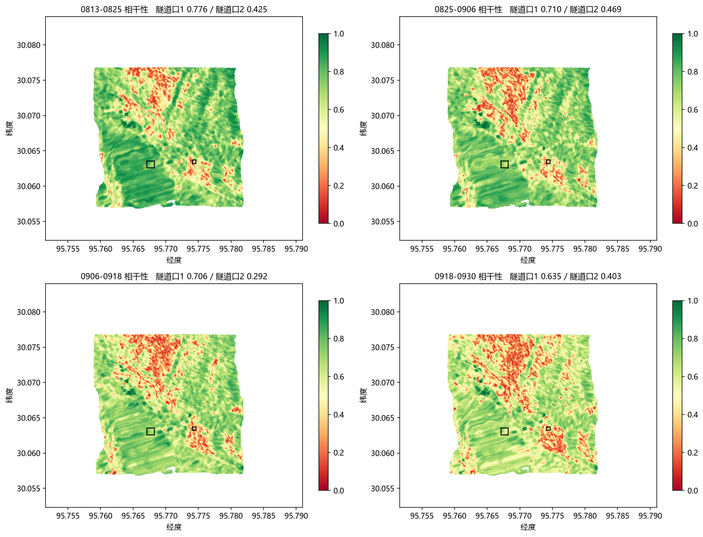
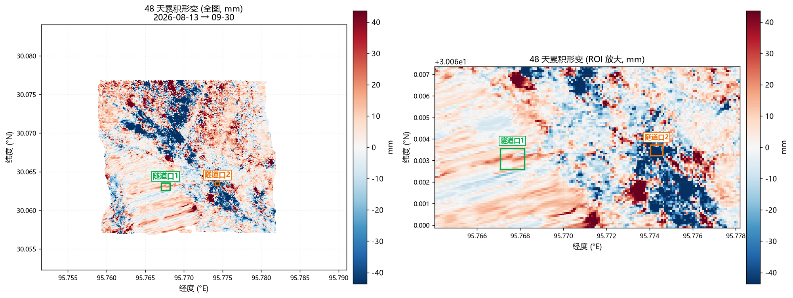
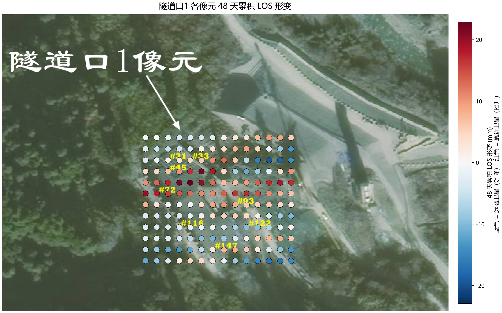
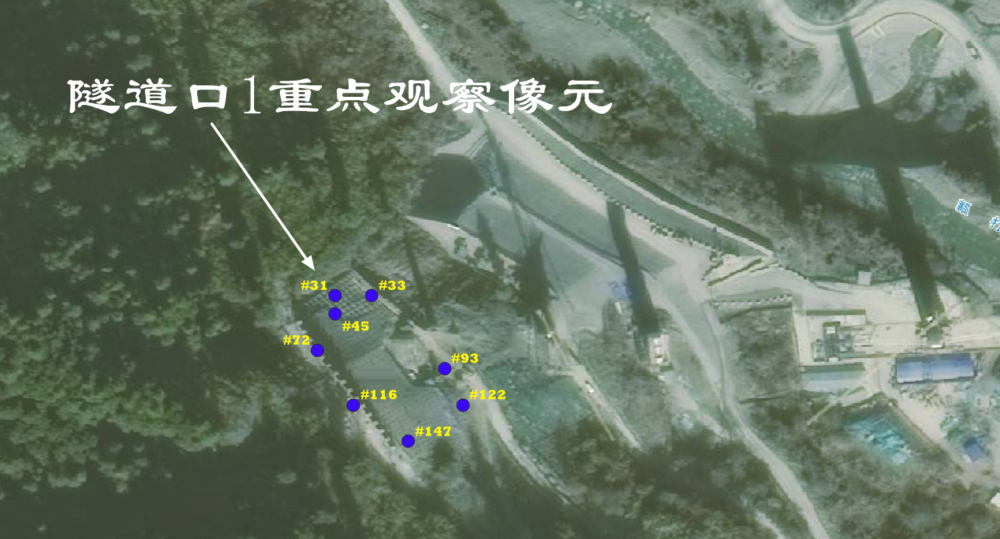
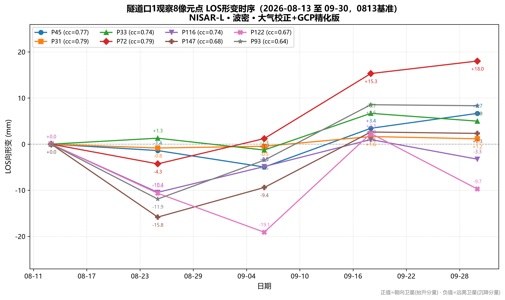
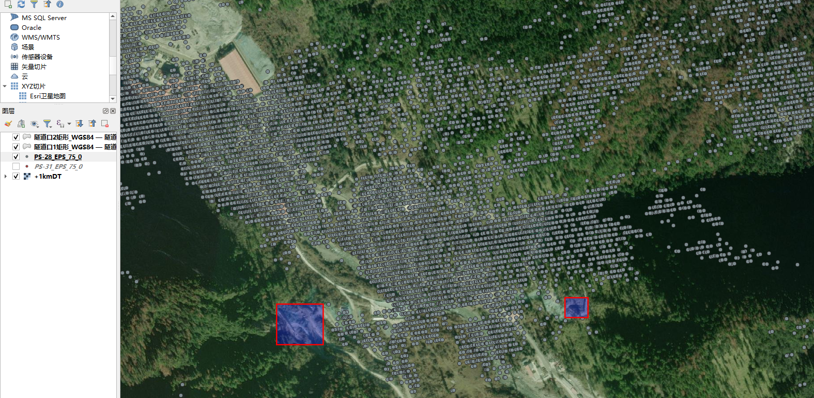
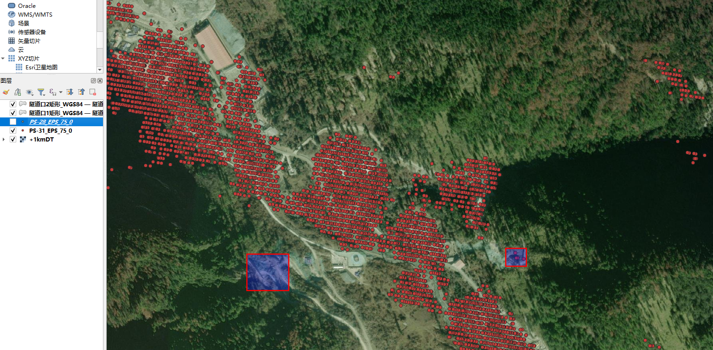

编制单位：启睿方宇(成都)科技有限公司 编制日期：2026 年 10 月 07 日
| 监测对象 | DMG隧道口 1、隧道口 2 高陡边坡 |
| 监测周期 | 20260813 — 20260930（48 天） |
| 影像景数 | 5 景 NISAR L 波段 RSLC（12 天重访） |
| 监测方法 | D-InSAR 干涉对时序累积分析 |
DMG隧道口 1、隧道口 2 位于西藏高原的高陡边坡区，坡体陡峻、地质条件复杂，边坡失稳对隧道施工与运营安全构成潜在威胁。为掌握边坡近期的形变状态，采用合成孔径雷达干涉测量（InSAR）技术，利用 NISAR 卫星L 波段（波长约 23.8 cm）升轨数据，以 D-InSAR 干涉对时序累积方法对两处边坡开展形变监测。
本次监测周期为 2026 年 08 月 13 日至 2026 年 09 月 30 日，时间跨度 48 天，共使用 5 景影像、构成 5 个干涉对（4 个 12 天链式对 + 1 个 24 天独立对）。其中 24 天独立对用于闭合差检验，是衡量处理链路自洽性的关键冗余观测。监测成果以 LOS（雷达视线向）形变给出，并同步给出相干性、相位精度、闭合差等质量指标，为边坡状态评估提供数据支撑。
（1）研究区范围文件：0km.kml、隧道口1矩形_WGS84.kml、隧道口2矩形_WGS84.kml。

（2）形变符号约定：本报告 LOS 形变以“远离卫星为正（+）、靠近卫星为负（−）”表示。如需换算为垂直方向形变，按 d = Δr / cosθ 计算，θ 取逐点入射角 ILOS。
（3）精度评定口径：本报告边坡形变未设置等级阈值，以 InSAR 自身精度（相位精度中位数）、ROI 均值不确定度及闭合差作为评定依据。
两处重点监测对象同处一条深切割峡谷的两侧谷坡，谷坡陡峻、高差大。隧道口 1 位于峡谷西侧、朝向雷达的坡面；隧道口 2 位于峡谷东侧、背向雷达的坡面。两处对象的基本参数见表 3-1。
表 3-1 监测对象基本信息
| 对象 | 经度范围 (°E) | 纬度范围 (°N) | 范围 | 高程 (m) | 平均坡度 (°) | 主坡向 (°) | 局部入射角 (°) |
|---|---|---|---|---|---|---|---|
| 隧道口 1 | 95.76708 ~ 95.76820 | 30.06258 ~ 30.06356 | 约 109 × 110 m | 3115.6 ~ 3256.4 | 45.5 | 292.9（西北，朝雷达） | 31.15 |
| 隧道口 2 | 95.77405 ~ 95.77461 | 30.06324 ~ 30.06372 | 约 54 × 54 m | 3174.4 ~ 3234.2 | 43.4 | 101.8（东，背雷达） | 86.23 |
雷达几何参数：卫星视线方位角（地面指向卫星）ALOS = −106.78°（≡ 253.22°），入射角 ILOS = 47.05°，卫星位于研究区西偏南方向、向东偏北观测。该几何条件决定了峡谷西坡（隧道口 1）具有良好的观测灵敏度，而峡谷东坡（隧道口 2）处于背坡与雷达阴影区，观测能力显著受限。

表 4-1 数据源与基本参数
| 项目 | 参数 |
|---|---|
| 卫星 / 波段 | NISAR / L 波段（λ ≈ 23.8 cm） |
| 轨道方向 | 升轨 |
| 影像时相 | 2026-08-13、2026-08-25、2026-09-06、2026-09-18、2026-09-30 |
| 景数 / 重访 | 5 景 / 12 天 |
| 外部 DEM | COP30_30m_30.08N_95.75E_30.05N_95.79E |
| 大气校正产品 | GACOS（2026-08-13、2026-08-25、2026-09-06、2026-09-18；2026-09-30 缺失） |
| 研究区投影 | WGS84 地理坐标；成果格网 474 × 381，像元 8.03 m |
表 4-2 InSAR 数据处理流程
| 步骤 | 处理环节 | 说明 |
|---|---|---|
| ① | 影像配准与干涉图生成 | 基于外部 DEM 精配准 |
| ② | 差分干涉与地形相位去除 | 去除平地相位与地形相位 |
| ③ | 滤波与相干性估计 | Goldstein 自适应滤波 |
| ④ | 大气延迟校正 | GACOS 水汽产品 |
| ⑤ | 轨道精炼与重去平 | 外部GCP 42 点（cc > 0.6） |
| ⑥ | 相位转位移+地理编码 | 相位转位移相干性阈值 0.25，格网 10 m；输出统一为 474 × 381，像元 8.03 m，WGS84 |
| ⑦ | 时序累积 | 以 2026-08-13 为基准时相，逐时相累加各干涉对形变量，得各时相相对基准的累积形变 |
表 4-3 干涉对网络构成
| 序号 | 干涉对 | 时间基线 | 用途 |
|---|---|---|---|
| 1 | 0813-0825 | 12 d | 链式时序对 |
| 2 | 0825-0906 | 12 d | 链式时序对 |
| 3 | 0906-0918 | 12 d | 链式时序对 |
| 4 | 0918-0930 | 12 d | 链式时序对 |
| 5 | 0813-0906 | 24 d | 冗余观测，用于闭合差检验 |
闭合差定义为：
闭合差 = (0813→0825) + (0825→0906) − (0813→0906)
即两条 12 天链式对之和与独立 24 天对之差，理论上应等于零。
表 5-1 各干涉对质量统计（相干性为均值，精度为中位数）
| 干涉对 | 时间基线 | 全图平均相干性 | 隧道口1 相干性 | 隧道口2 相干性 | 相位精度中位 (mm) | 去平面 std (mm) | 大气校正 |
|---|---|---|---|---|---|---|---|
| 0813-0825 | 12 d | 0.694 | 0.776 | 0.425 | 6.40 | 11.13 | 有 |
| 0825-0906 | 12 d | 0.654 | 0.710 | 0.469 | 7.04 | 12.70 | 有 |
| 0906-0918 | 12 d | 0.617 | 0.706 | 0.292 | 7.87 | 15.87 | 有 |
| 0918-0930 | 12 d | 0.565 | 0.635 | 0.403 | 9.21 | 18.20 | 无 |
| 0813-0906 | 24 d | 0.621 | 0.708 | 0.309 | 7.74 | 16.36 | 有 |
由表可见，随着时间基线增大，全图平均相干性由 0.694 逐步降至 0.565，符合 L 波段在植被与陡坡区的失相干规律；0918-0930 因缺少 2026-09-30 的 GACOS 产品，未实施大气校正，是本次处理中唯一存在参数不一致的干涉对。

表 5-2 闭合差统计
| 统计范围 | 闭合差均值 (mm) | 空间 std (mm) | 均值标准误 (mm) |
|---|---|---|---|
| 全图（474 × 381） | +0.65 | 21.79 | ±0.67 |
| 隧道口 1 | −8.95 | 4.58 | ±4.01 |
| 隧道口 2 | +39.57 | 39.19 | ±39.19 |
全图闭合差均值为 +0.65 mm，仅为其空间标准差（21.79 mm）的 3%，且去平面处理后闭合差均值降至 +0.0007 mm，可视为零。
说明：鉴于隧道口 2处于背坡与雷达阴影区，观测能力显著受限，数据多为伪影，其相干性较低（0.29-0.47），闭环差+39.57，因此本次运算成果不可信，成果报告不予采纳。




为了长时序监测本点，在本次报告之前曾用ESA的哨兵-1数据对该点开展2025年1月至2026年9月的时序InSAR运算。但DMG隧道地处青藏高原的深沟、峡谷，地理位置特殊，隧道口1、2均无有效数据。


因此本次只有采用NASA最新发布的NISAR卫星数据，开展以上运算。
报告完成日期：2026 年 10 月 07 日
编制单位：启睿方宇(成都)科技有限公司